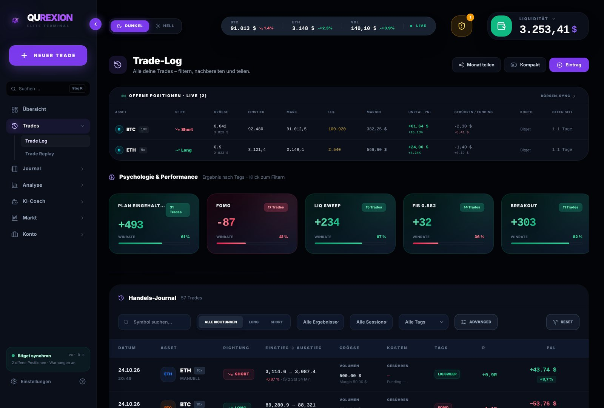
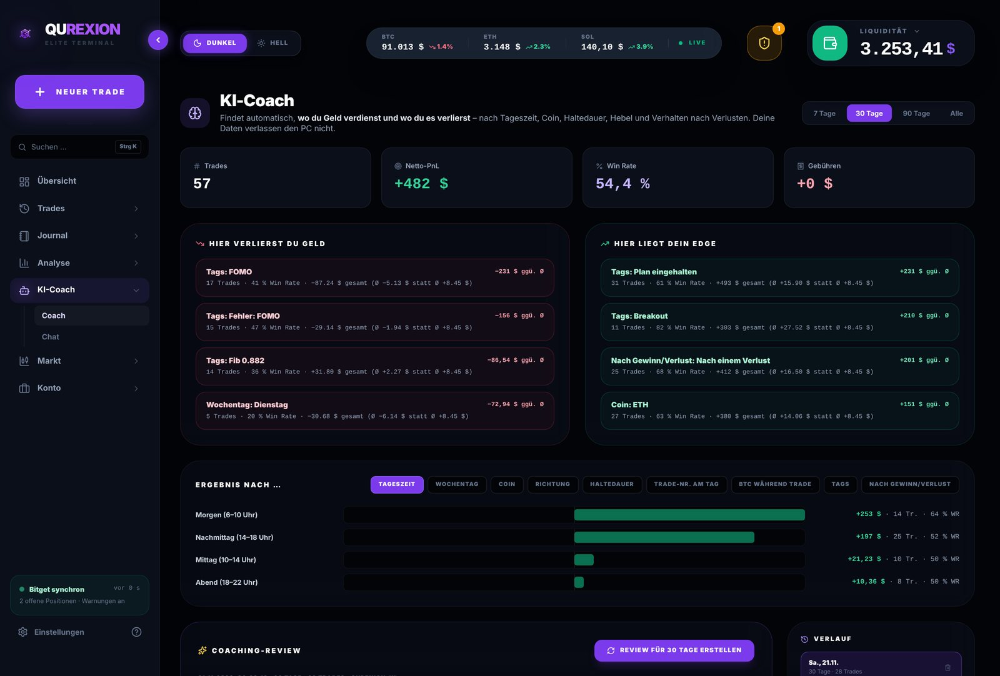

Ein Journal, das die Arbeit für dich macht.
Verbinde deine Börse einmal – ab dann landet jeder Trade mit Gebühren und Funding automatisch im Journal, und QUREXION macht daraus Antworten.
Jeder Trade landet von allein im Journal.
Einmal verbinden – offene Positionen siehst du live, geschlossene Trades kommen automatisch mit Gebühren, Funding und Hebel.
- 6 Börsen per API, alle anderen per CSV-Import
- Positionen alle 5 Sekunden, Abgleich jede Minute
- Nur Lese-Schlüssel – QUREXION kann nicht handeln oder auszahlen

In 20 Sekunden pro Trade besser werden.
Setup, Plan, Gefühl, Lektion – QUREXION fragt kurz nach und zeigt dir dazu, wie nah du am Bestkurs ausgestiegen bist.
- Fokus-Modus: Frage für Frage, komplett per Tastatur
- Wochenrückblick mit 3 Erkenntnissen aus deinen echten Trades
- Wochenziele, die QUREXION automatisch prüft

Jeden Trade wiederfinden und nachspielen.
Filter nach Coin, Richtung, Ergebnis, Tag oder Gefühl – und spiel jeden Trade Kerze für Kerze mit Einstieg, Stop-Loss und Ausstieg im Chart nach.
- Ergebnis nach Tags: welches Setup dir wirklich Geld bringt
- Replay mit Ausstieg gegen den Bestkurs
- Teilbare Karten deiner Trades – Beträge auf Wunsch ausgeblendet

Sieh, was dich wirklich Geld kostet.
Ergebnisse nach Wochentag, Uhrzeit, Coin und Hebel. Disziplin gegen Emotion – in Dollar.
- 9 Berichte: Verlauf, Kennzahlen, Risiko, Emotionen, Playbook, Marktlage …
- Szenario-Simulator mit deinen echten Trades
- Wöchentlicher Bericht automatisch als druckfertige Datei

Gewarnt, bevor es teuer wird.
Wenn du in einem Trade bist und etwas Wichtiges passiert, meldet sich QUREXION – als Pop-up, Windows-Nachricht und Ton.
- Verlustserie, fehlender Stop-Loss, Tageslimit, Revenge-Trade
- US-Makro-Termine (Fed, CPI, Arbeitsmarkt) mit Vorlauf
- Pre-Trade-Check: Positionsgröße aus deinem Risiko, bevor du einsteigst

Frag dein Journal einfach.
„Wie laufen meine Short-Trades am Montag?“ – QUREXION sucht die passenden Trades, rechnet selbst und lässt die KI nur die Antwort formulieren.
- Wo du Geld verlierst – und wo deine Stärke liegt
- Nach Tageszeit, Coin, Hebel, Haltedauer und Verhalten
- Nichts wird erfunden: Die KI bekommt nur berechnete Zahlen
